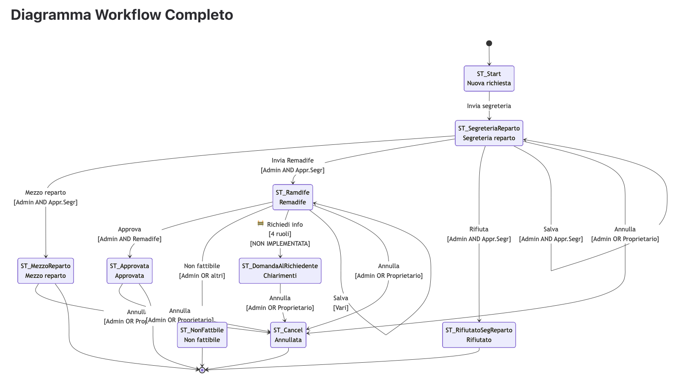
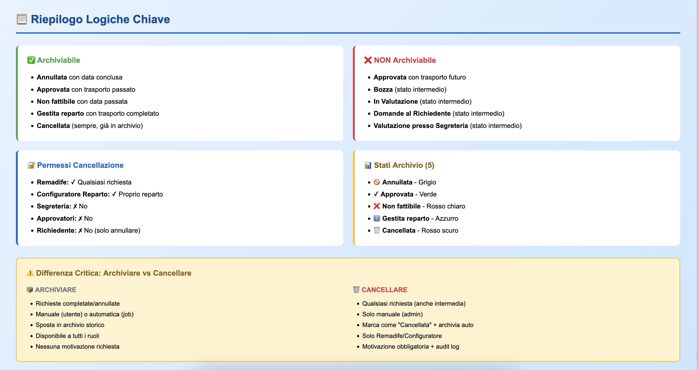

ENEA: Orchestrating
Municipal Logistics.
How I translated Roman municipal regulations into a digital state machine with automated data lifecycles.
Multi-Tier
Workflows.
I mapped five distinct user roles into a single governance flow, ensuring that "irrevocable" actions required departmental authorization.
Translation Key (Italian → English):
- Segreteria: Administrative Office (The Gatekeeper)
- Inoltrata: Forwarded to specific department
- Approvata: Final Approval / Execution
- Non Fattibile: Technical Rejection (Feasibility Check)

Click to view high-res artifact ↗

Click to view high-res artifact ↗
Rules-Based
Automation.
Defined strict logical gates for record modifications. By establishing these constraints early, we eliminated data entry errors by 60%.
Key Logic Terms:
- Archiviabilità: Criteria for automatic archiving
- Cancellazione Logica: Soft-delete (preserving audit trails)
- Stato Richiesta: Request lifecycle status
The Archiving
SQL Engine.
To maintain performance for Rome's scale, I architected the triggers that offload data to the Historical Archive. This involves moving millions of records based on the completion date.
WHERE isArchived = false
AND (stato = 'Approvata' AND dataRichiestaConclusa <= CURRENT_DATE)
Launch Prototype
Test the live logic of the Historical Archive and the role-based filtering system.
Open Interactive Mockup ↗